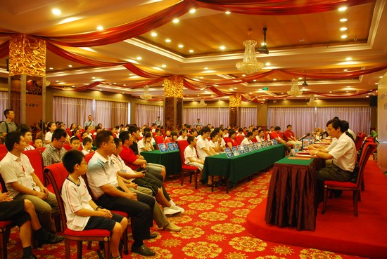
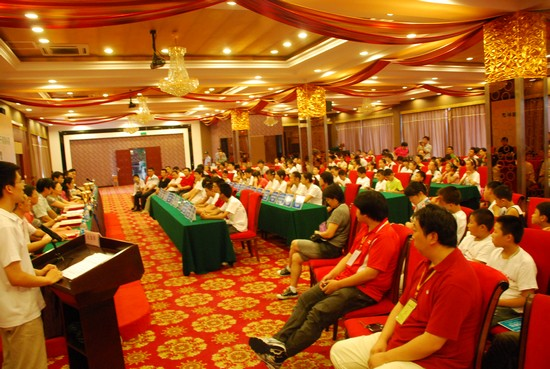
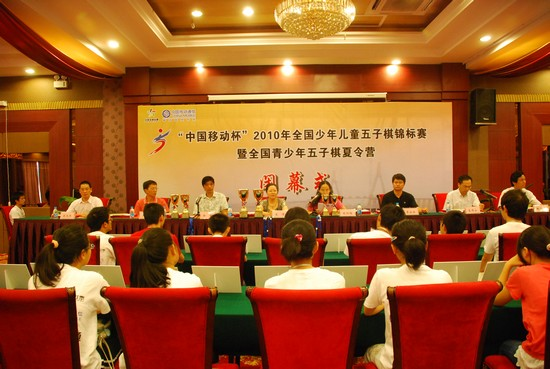
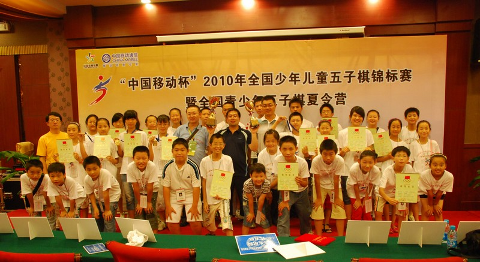
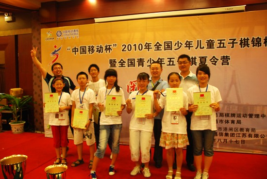

少儿赛结束了
#1 少儿赛结束了作者：有志青年 发表时间：2010-8-17 19:24:49
儿童组南通和浙江的选手分包了
儿童女子组，除一名浙江宁波的选手第五外，前八都是南通选手
儿童男子组，除一名南通的选手第七外，前八都是浙江（宁波、台州、棋类协会）的选手
少年组，南通意外收获
原先呼声很高的黄琼莹和刘徇都出现了意外情况
最后一轮的时候，少年女子组刘徇已经7分领先，对手是一个5分的南通选手，结果被南通选手意外翻盘，而另一台的南通选手许姝怡也轻松战胜广州的对手，确定了冠军的位置，纪香战胜了石家庄的对手获得第三。
少年男子组，最后一轮蒋哲宇战胜台州梁卫，确定了第二的位置，而陈泽宇对阵黄琼莹，在优势局面上，突然腹痛，没有能拿下，最终没有能拿到奖牌，不过在前八。
最终，港闸区的学生获得两金（儿女方静、少女许姝怡）两银（儿女石玉、少男蒋哲宇）两铜（儿女周悦、少女纪香）的个人成绩，以及团体少年组冠军，团体儿童组亚军的好成绩。
［此帖子已被 有志青年 在 2010-8-17 19:31:09 编辑过］
［ 被感动的人 于 2010-8-17 19:31:09 时花20金币送鲜花一朵］
#2 Re:少儿赛结束了作者：圊籽 发表时间：2010-8-17 19:30:05
“许舒怡”——许姝怡，不会记错今天的对手名字
［ 有志青年 于 2010-8-17 19:30:24 时奖励此帖[金币加 20 威望加1］
#3 Re:少儿赛结束了作者：被感动的人 发表时间：2010-8-17 19:31:21
没有总的成绩表？#4 闭幕式现场作者：有志青年 发表时间：2010-8-17 19:32:40



［ 无尽 于 2010-8-17 20:03:55 时奖励此帖[金币加 20 威望加1］
#5 Re:少儿赛结束了作者：有志青年 发表时间：2010-8-17 19:33:46

港闸区教育局代表队全家福

拉风的两金两银两铜和双奖杯
#6 Re:少儿赛结束了作者：风趣幽默 发表时间：2010-8-17 19:59:50
祝贺南通！恭喜有志！#7 Re:少儿赛结束了作者：深海鱼 发表时间：2010-8-17 20:03:24
恭喜南通~~#8 Re:少儿赛结束了作者：水月 发表时间：2010-8-17 20:25:28
好多人都很脸熟嘛。。。小朋友们很厉害～～#9 Re:少儿赛结束了作者：有志青年 发表时间：2010-8-17 20:31:13
嘿嘿，还是那帮人呀，好苗还要老师带哟，感谢水月老师呢#10 Re:Re:少儿赛结束了作者：黄药师 发表时间：2010-8-17 22:36:38
引用：
原文由 圊籽 发表于 2010-8-17 19:30:05 :
“许舒怡”——许姝怡，不会记错今天的对手名字［ 有志青年 于 2010-8-17 19:30:24 时奖励此帖[金币加 20 威望加1］
小陈啊!呵呵，回家了吗？
#11 Re:少儿赛结束了作者：圊籽 发表时间：2010-8-17 22:40:23
没，还在宾馆，明天回去［ 黄药师 于 2010-8-17 22:53:04 时花20金币送鲜花一朵］
#12 Re:少儿赛结束了作者：陌默 发表时间：2010-8-17 23:27:02
think!m